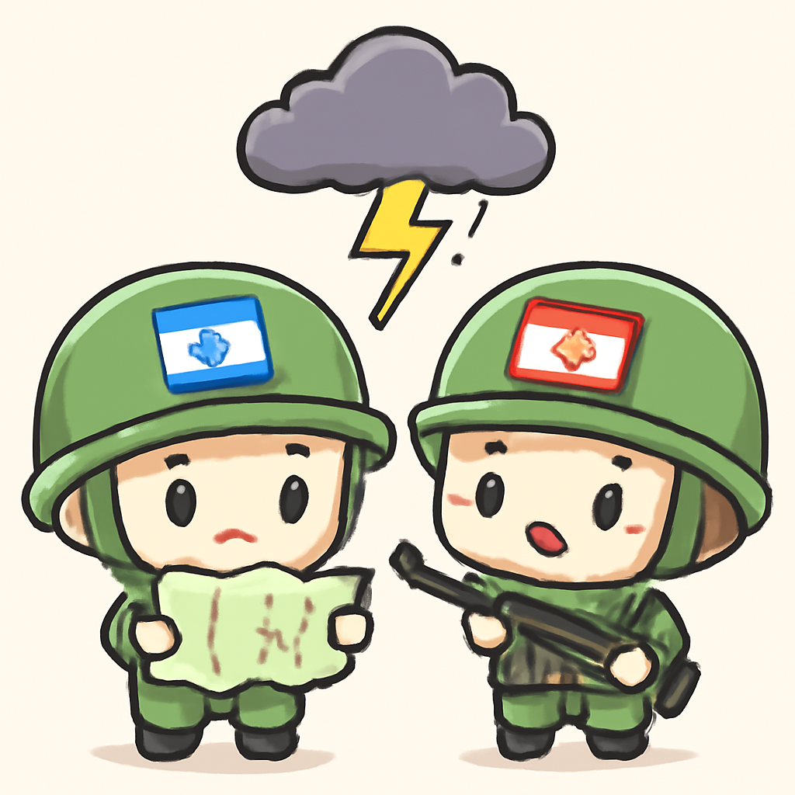
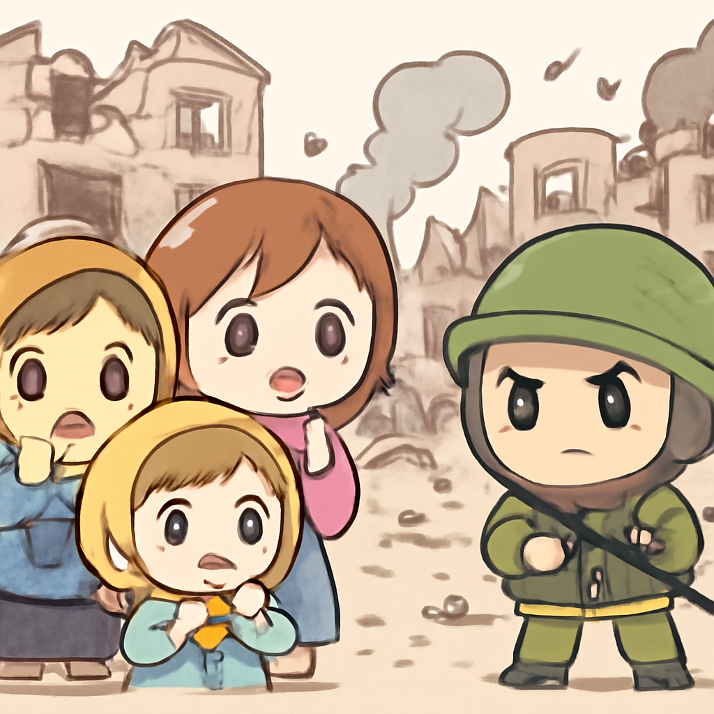
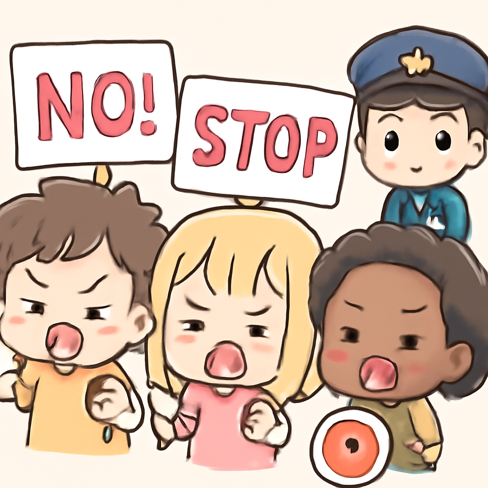

其一 · 以色列南部 · 以色列空襲黎巴嫩南部
以色列持續空襲黎巴嫩，但部分停火協議仍在進行中。

在以色列南部，空襲黎巴嫩南部的行動仍在進行中，儘管美國宣佈的停火協議部分生效。此舉可能會加劇地區緊張局勢，影響到以色列與哈茲堡的談判進程。希望這不會演變成一場“誰的空襲更厲害”的比賽！
🔗 原始新聞 ↗
2026-06-03 · 以古觀今，以笑抗愁
以色列持續空襲黎巴嫩，但部分停火協議仍在進行中。

在以色列南部，空襲黎巴嫩南部的行動仍在進行中，儘管美國宣佈的停火協議部分生效。此舉可能會加劇地區緊張局勢，影響到以色列與哈茲堡的談判進程。希望這不會演變成一場“誰的空襲更厲害”的比賽！
🔗 原始新聞 ↗
基輔遭俄軍猛烈空襲，民眾從地下避難所回到家中。

在烏克蘭基輔，剛從地下避難所出來的居民面對猛烈的俄軍空襲，造成嚴重損失。這次攻擊不僅是物理上的破壞，還對民心造成巨大心理壓力。希望他們能早日重建，不要再被炸到得失心瘋。
🔗 原始新聞 ↗
微軟宣佈新量子晶片可靠性提升一千倍。
在美國華府，微軟最新宣佈他們的新量子晶片的可靠性提升了一千倍，預計在十年內能解決實用的商業問題。這不僅是科技上的大突破，還可能改變未來的計算方式。希望未來的電腦能幫我們解決更複雜的問題，比如為什麼總是忘記帶傘！
🔗 原始新聞 ↗
加拿大正式要求續簽北美自由貿易協定，以加強經濟合作。
加拿大貿易部長向美國和墨西哥提出續簽北美自由貿易協定的請求，這對三國的經濟合作至關重要。隨著全球經濟的不確定性，這一舉措或將為北美帶來更多穩定。希望各國的貿易談判不要像選舉一樣，鬧得不可開交！
🔗 原始新聞 ↗
英國警方因手銬事件引發民眾抗議，案件越演越烈。

在英國，一名學生亨利·諾瓦克在被警方手銬的情況下死亡，該事件引發了全國性的抗議與對警察的調查。這不僅是一起悲劇，也引發了對執法方式的廣泛質疑，讓人們再次思考「維護治安」與「人權」之間的平衡。希望未來的執法能更加人性化，而不是成為“執法如山”的代名詞。
🔗 原始新聞 ↗